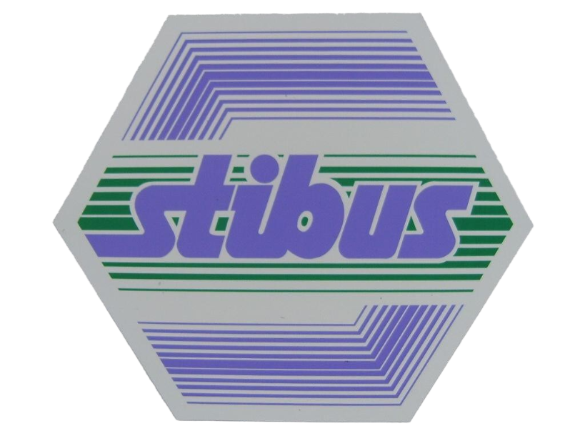
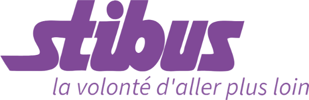

Découvrez l'évolution du réseau et de son organisation depuis 1979.

Le réseau Stibus est créé en 1979 par le Syndicat Intercommunal du Bassin de la Sambre (SIBS), regroupant dix-neuf communes des environs de Maubeuge. L'exploitation du réseau est déléguée à une société d'économie mixte locale (SEM), la Société d'économie mixte des transports intercommunaux du bassin de la Sambre (SEMITIB).
En 1995, le SIBS devient le Syndicat Intercommunal du Val de Sambre (SIVS), puis Syndicat Mixte du Val de Sambre (SMVS) en 2000.
Voir l'ancien parc de bus du réseau STIBUSLe projet Viavil prévoit la création d'un site propre d'une longueur de 8 km entre la polyclinique du parc à Maubeuge et la zone commerciale de Louvroil pour un montant total de 68 millions d'euros. Les travaux se déroulent entre 2006 et 2008.
Le 12 décembre 2008, le « BusWay » est inauguré. Il s'agit d'une ligne de bus à haut niveau de service reliant Hautmont à Jeumont en empruntant le site propre du projet Viavil et offrant une fréquence attractive sur sa portion centrale entre Maubeuge et Hautmont. Cette ligne est exploitée à l'aide de 20 bus du type Crealis du constructeur Irisbus.
Le réseau est restructuré à cette même date et se compose de 17 lignes régulières circulant du lundi au samedi et de 4 lignes dominicales.
Le 1er avril 2012, la SEMITIB devient une société publique locale et prend le nom de « Société publique locale des transports intercommunaux de Sambre-Avesnois » (SPLTISA).
En 2013, le SMVS devient un syndicat mixte à vocation unique et est transformé en « Syndicat mixte des transports urbains de la Sambre » (SMTUS).
Le 1er janvier 2018, le réseau est restructuré. Quatre lignes structurantes (lignes A à D) sont créées et certaines lignes secondaires sont modifiées. Cette restructuration s'accompagne par l'extension du service de transport à la demande à certaines communes.
En janvier 2024, le SMTUS devient « Sambre Mobilités ».
Ce sont des bus diesel qui ont longuement servi avant la modernisation du réseau vers des bus à haut niveau de service (BHNS).
Ces véhicules circulent principalement sur les axes à fort trafic et les sections en site propre du BusWay.
